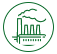
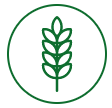
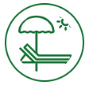

Алматинская область – продовольственный пояс мегаполиса Алматы – расположена в благоприятной природно-климатической зоне. ВРП Алматинской области за 2020 год по оценке составит 3 343,5 млрд. тенге.

Промышленность
- Самый крупный сектор по занятости населения (более 27% от общей занятости)
- 136 крупных и средних промышленных предприятий.
- Единственный производитель в республике солода, электрических аккумуляторов, гипсокартонных изделий, железобетонных и металлических опор для высоковольтных линий электропередач, противопожарных гидрантов, силикона и синтепона.
- Выпускается около 70 видов основных строительных материалов и конструкций.

Сельское хозяйство
- Доминирует в республиканском товарном производстве табачных изделий и виноградного вина.
- 30 видов сельскохозяйственных культур, 45 видов сельскохозяйственных животных и более 35 видов переработанных продовольственных товаров.
- 60,6 % промышленного производства региона - переработка сельскохозяйственной продукции.
- 60,6 % промышленного производства региона - переработка сельскохозяйственной продукции.

Туризм
- Уникальная природа Заилийского и Джунгарского Алатау; озера Алаколь, Балхаш, Капшагайского водохранилища, горных озер.
- Источники минеральной воды и лечебной грязи.
- Культурно-исторические (курганные) комплексы и наскальные изображения.
- Мавзолеи и мазары, архитектурные сооружения позднего периода.